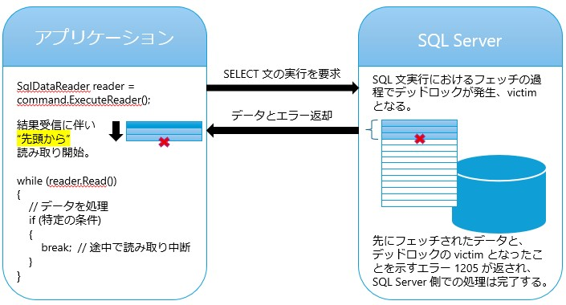

こんにちは、Japan Developer Support Core チームの高橋です。SQL Server にアクセスするアプリケーションではクエリを実行し、そのクエリ実行結果となるデータを処理しますが、その受け取ったデータを最後まで読み取ることの重要性について、皆さんはどの程度意識されていますでしょうか？実は、結果セットを途中で読み取りを止めてしまうと、読み取り終了時に時間がかかるといったパフォーマンスの問題が生ずるケースや、SQL Server 側で発生したデッドロック エラーを検知できないケースがあります。本記事では、この動作の仕組みや、読み取りを途中で止めた場合に発生しうる問題について、実際の再現シナリオとともに詳しく解説します。
問題の概要：結果セットを最後まで読み取らない場合の落とし穴
早速ですがまずは問題となる可能性のある例をあげましょう。
C# で開発したアプリケーションで SQL Server へのアクセスに ADO.NET の SqlDataReader を使用してクエリ結果を読み取る際、以下のようなコードを書くことがあるかもしれません。
1 | SqlDataReader reader = command.ExecuteReader(); |
このコードでは、特定の条件を満たした時点で break により読み取りを中断しています。一見問題ないように見えますよね。これの何が問題となるのでしょう？
問題 1: 想定外の所要時間
クエリの実行結果として SQL Server から返されたデータを順次読み取り、break で中断したタイミングでまだバッファ上には読み取られていないデータが残っているとします。この場合、SqlDataReader.Close() では内部的にそれらの残されているデータを読み取って破棄します。また、SQL Server 側でもまだフェッチしていないデータがある場合、サーバー カーソルとして開いた状態のまま、クライアントからの次のリクエスト待ちの状態となっています。そのため、この Close メソッドのタイミングではそのキャンセルのリクエストをしなければなりません。したがって break で中断したとしても、Close メソッド実行時にはこのような一連の操作のための時間を要することとなります。
Close するだけなのに次のステップに進むまでに時間を要するのはなぜ？と疑問を持つユーザーもいることでしょう。それはこのような理由です。
問題 2: デッドロック エラー検知漏れ
大量のデータを扱うクエリは実行しないから問題 1 のようなレスポンス悪化はないだろうと思うあなた、まだ安心はできません。さらに深刻なのはこの破棄の処理中に SQL Server から送られてくるエラー メッセージも同様に破棄される点です。これにより、アプリケーション側でエラーを検知できなくなる問題が生じ得ます。具体的には、デッドロックによってトランザクションが強制的にロールバックされた場合があげられます。
デッドロックはフェッチ時に発生しますので、もしそのデッドロック発生までの間にフェッチされたデータが存在する場合はそのデータが先にクライアントへ返されます。そしてデッドロックの victim となると、SQL Server 側ではトランザクションがロールバックされ、それを示すエラー 1205 がクライアントに返されます。
1 | エラー 1205: |
そしてアプリケーション側では受信したデータを先頭から順に読み取ります。この受信したデータはフェッチされたデータ -> エラー 1205 の順番で並びます。

したがって、このようなフェッチされたデータの読み取りの途中で中断した場合、エラー 1205 が読み取られない状態で SqlDataReader.Close() へと進むことになります。そして、残りのデータとともにエラー情報も破棄されます。こうしてクエリの実行から終了までの間でデッドロック エラーが検知されない結果となります。
問題 3: 想定外のトランザクション エラー
さらに問題は続きます。
もしアプリケーション側で明示的なトランザクションを開始している場合、問題 2 のケースではデッドロック エラーを検知することなく処理が先に進みますので、トランザクションの完了のステップがエラーとなるという問題も発生します。
たとえば先のコード例が次のようにトランザクション管理のためのコードで囲まれていたとします。
1 | SqlTransaction transaction = connection.BeginTransaction(); |
問題 2 のシナリオでは、アプリケーションにおいて受信した情報をすべて読み取っていないためにデッドロックエラーを検知していません。すると、処理はそのまま先に進むこととなり、Commit メソッド実行のステップへ到達します。
しかし、デッドロックの victim となった場合には、SQL Server 上ではトランザクションはロールバックされていますので、トランザクションは完了済となります。そのため、アプリケーションでの Commit メソッドの実行は次のようなエラーとなります。
1 | System.InvalidOperationException: |
※英語のメッセージ:
1 | This SqlTransaction has completed; it is no longer usable. |
問題 2 のシナリオではデッドロック エラーが表面化していませんので、アプリケーションとしてはなぜトランザクションが完了しているとのエラーとなるのかわかりませんよね。また完了と言われても、コミットされたのかロールバックされたのかもわかりませんので、SQL Server 側のデータを確認しなければなりません。
デッドロック エラーが検知できていたならこのような問題に遭遇せずに済んだ可能性があることを考えると、アプリケーション開発や運用においては混乱を招く問題だと言えますね。
問題点のまとめ
クエリ実行結果として受け取ったデータをすべて読み取らずに中断する場合の問題点について理解できましたでしょうか。
- 想定外の所要時間
- デッドロック エラー検知漏れ
- 想定外のトランザクション エラー
ここでは C# での ADO.NET 利用の例をもとに説明しましたが、レガシーな ADO などの他のデータ アクセス テクノロジーを使用する場合も、特に前方スクロール タイプのサーバー カーソルを使用するシナリオにおいては、同様の問題に遭遇する可能性があります。もし同様の実装となっている場合には、このような問題が生ずる可能性がある点を把握しておきましょう。
推奨される対策
問題点を理解できたとして、ではどのように問題を回避するのがよいかを紹介します。
1. クエリを最適化する
最も基本的で重要な対策は、必要なデータのみを取得する SQL 文を実行することです。
1 | -- 悪い例：大量のデータを取得してアプリ側でフィルタ |
2. 結果セットは最後まで読み取る
もちろん SQL 文の実行後に取得した結果は最後まで読み取ることも重要です。
// 悪い例
1 | while (reader.Read()) |
// 良い例
1 | while (reader.Read()) |
トラブルシューティング
ここまでに説明した事象を開発したアプリケーションで見たことがある、問題に遭遇しており調査中である、という場合には、次のようなツールによる情報採取や解析を進めてみましょう。また、私たちサポートへのお問い合わせでもこのような情報を使用しますので、もし採取方法や解析方法がわからない場合などは、ここで紹介した方法でどこまで実施したかなどを添えてお問い合わせください。
A. SQL Server 側での情報採取
system_health イベント セッションにより取得されたデッドロック レポート xml_deadlock_report を確認します。または、拡張イベント（Extended Events）トレースによりデッドロックが発生していないか、追加のイベントのトレースを取得します。
どのような情報が取得されるかなどは以下のページに説明があります。
B. アプリケーション側での情報採取
主に データ アクセス テクノロジー向けトレース（BID トレース） を取得し、確認します。
HowTo: BID トレース - データアクセス アプリケーションのトレースを採取する
.NET アプリケーションにおいて Microsoft.Data.SqlClient 名前空間のデータプロバイダーを使用する場合は、BID トレースの代わりに以下で紹介されているイベント トレースの機能を使用します。
取得したトレースでは、以下のような情報を確認できます：
- プログラムで実行されたデータアクセス関連の関数やメソッドの実行経緯
- SQL Server から受信したエラー メッセージ
- トランザクションの状態遷移
たとえば先のコード例で System.Data.SqlClient 名前空間のデータプロバイダーを使用していたとして、そのアプリケーション実行中の BID トレースを取得した場合、SqlDataReader.Close() 実行時に次のようにデッドロックエラーが処理されている (検知はしたものの何もせず破棄される) ことを確認できます。
1 | "enter_01 <sc.SqlDataReader.Read|API> 1# " |
まとめ
本記事では、SQL Server にアクセスするアプリケーションにおけるクエリの実行結果の読み取りを途中で中断した場合に発生しうる問題について解説しました。
重要なポイント：
- 結果セットは最後まで読み取る - 途中で中断すると、予期しない遅延、デッドロックなどの重要なエラーを見逃す可能性、想定していないエラー発生の可能性が生じます。
- 必要となるデータのみを取得する SQL 文を実行する - クライアントなどのマシン性能があがっても取得するデータを最小限とすることは基本です。
これらの基本を理解し、適切に実装することで予期しないエラーを防ぎ、より堅牢なアプリケーションを構築できます。
本記事が、皆様のアプリケーション開発と運用の一助となれば幸いです。
本ブログの内容は弊社の公式見解として保証されるものではなく、開発・運用時の参考情報としてご活用いただくことを目的としています。もし公式な見解が必要な場合は、弊社ドキュメント (https://learn.microsoft.com や https://support.microsoft.com) をご参照いただくか、もしくは私共サポートまでお問い合わせください。